Experience the inspiring journey of a ninja who never gave up on his dream.
User: Naruto Uzumaki, Jiraiya, Minato Namikaze
A spinning sphere of concentrated chakra formed in the palm of the hand, requiring precise shape transformation without hand signs.
User: Naruto Uzumaki
Naruto combines wind-nature chakra with the Rasengan, creating a massive spinning shuriken that destroys cells with microscopic wind blades.
User: Sasuke Uchiha, Kakashi Hatake
Channels a large amount of lightning chakra into the user's hand, creating a high-speed piercing thrust that sounds like a thousand chirping birds.
User: Sasuke Uchiha, Itachi Uchiha
Kneads chakra within the chest and expels it as a massive sphere of flame, burning everything in its trajectory.
User: Tobirama Senju, Kisame Hoshigaki
Shapes a massive amount of water into a ferocious dragon that crashes down upon the opponent with crushingly heavy hydraulic force.
User: Orochimaru, Temari
Gathers wind chakra in the lungs and blows it out in a heavy, destructive gust of wind that levels trees and sweeps away enemies.
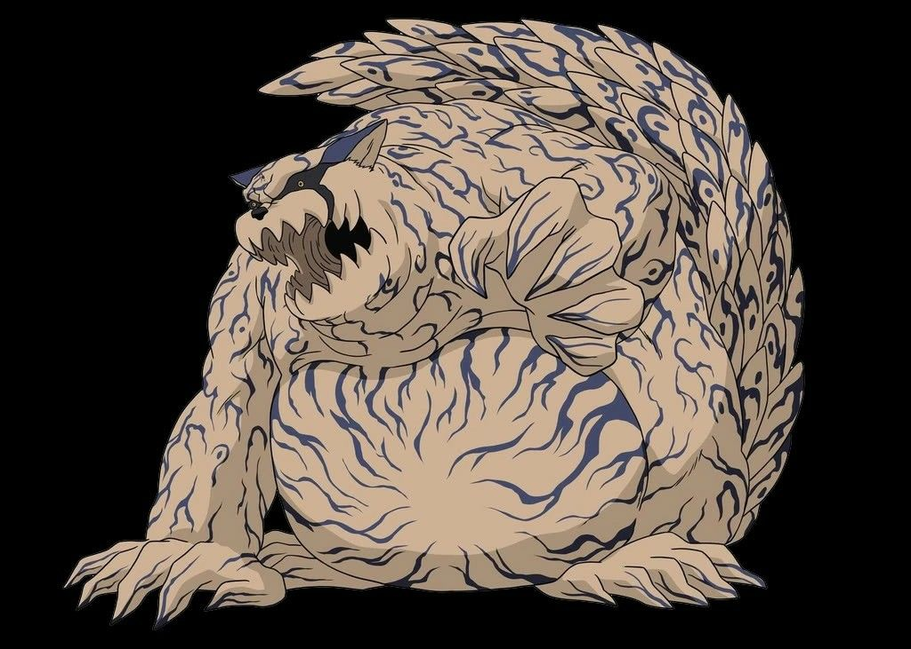
I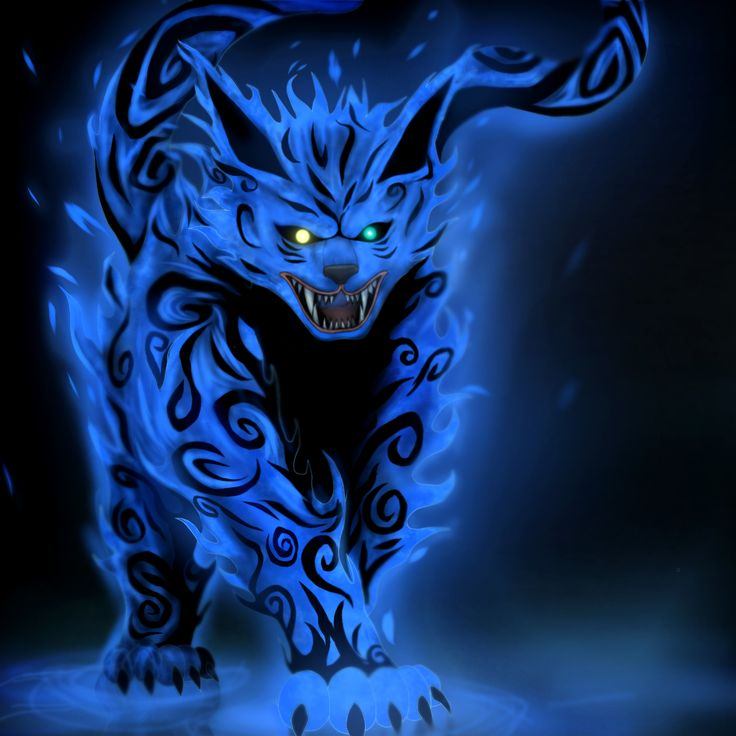
II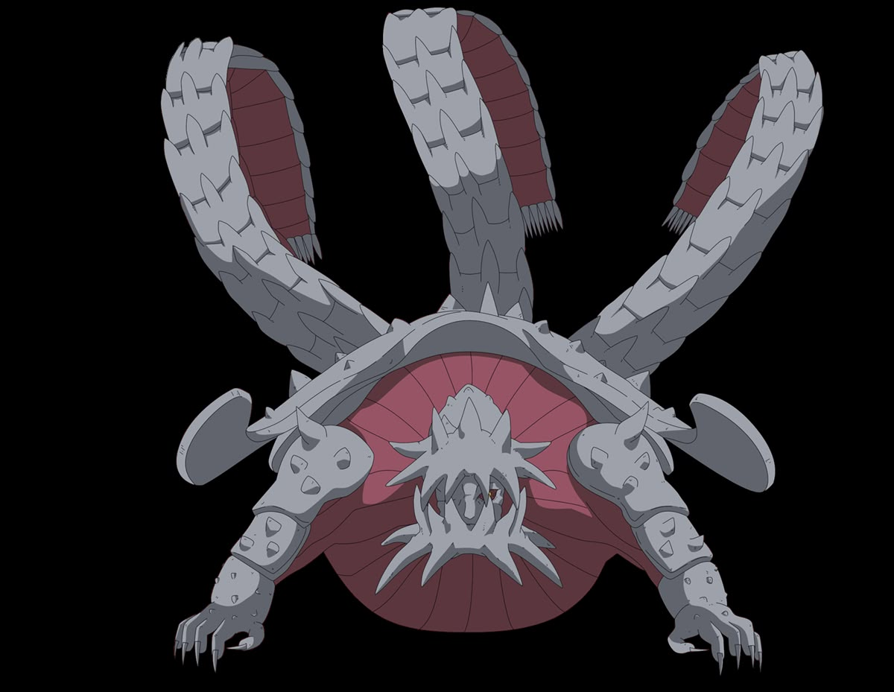
III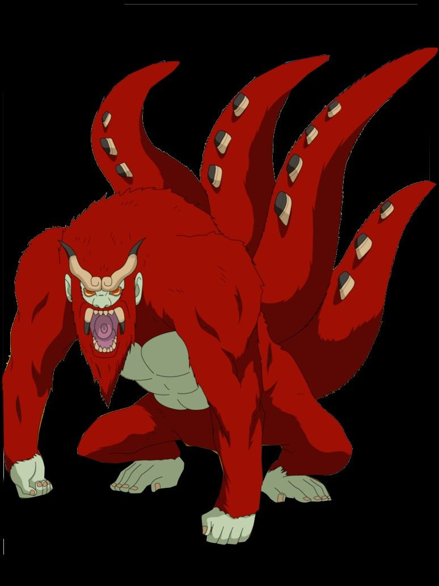
IV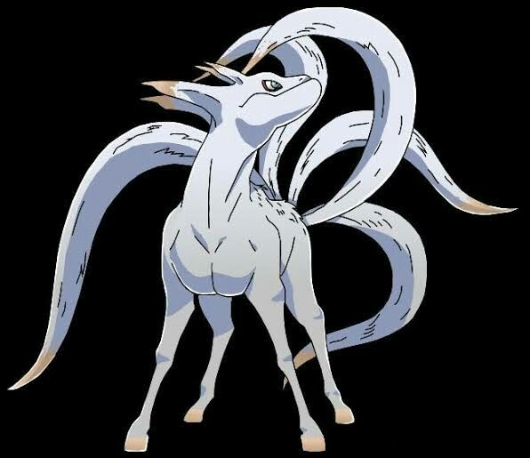
V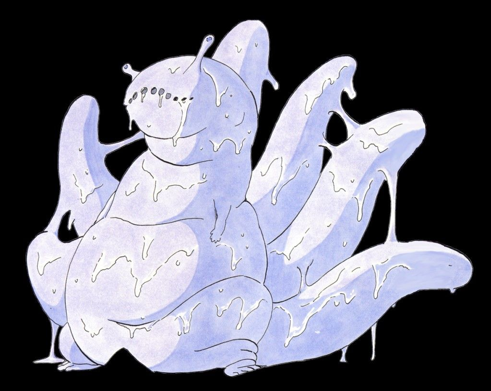
VI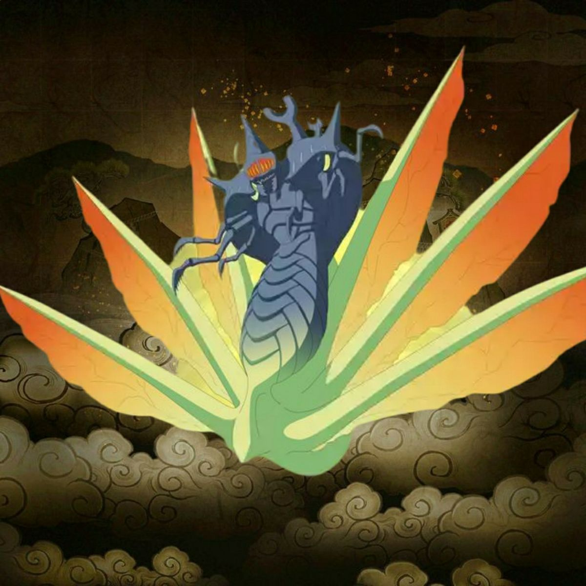
VII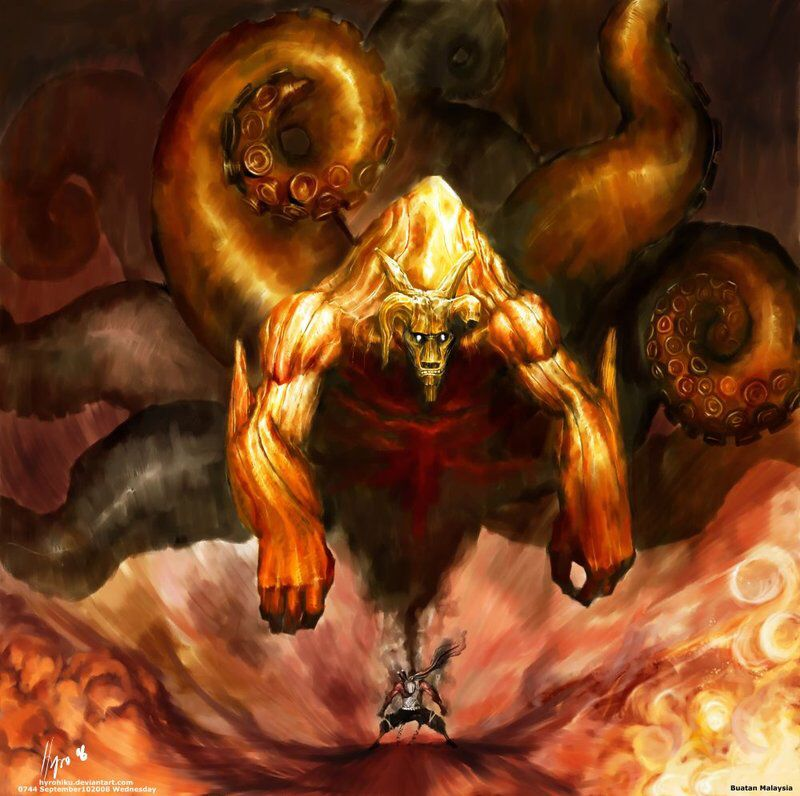
VIII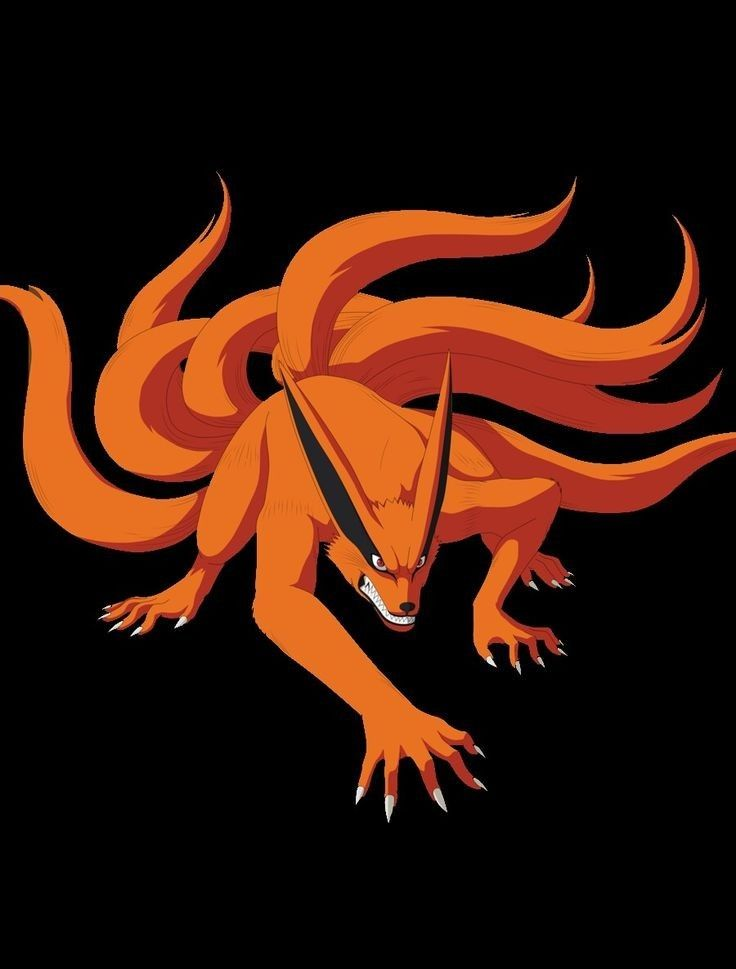
IX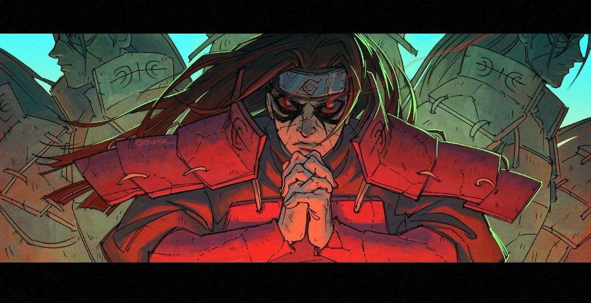
FirstCo-founded Konohagakure along with Madara Uchiha. Renowned as the "God of Shinobi", his DNA and healing cells became legendary.
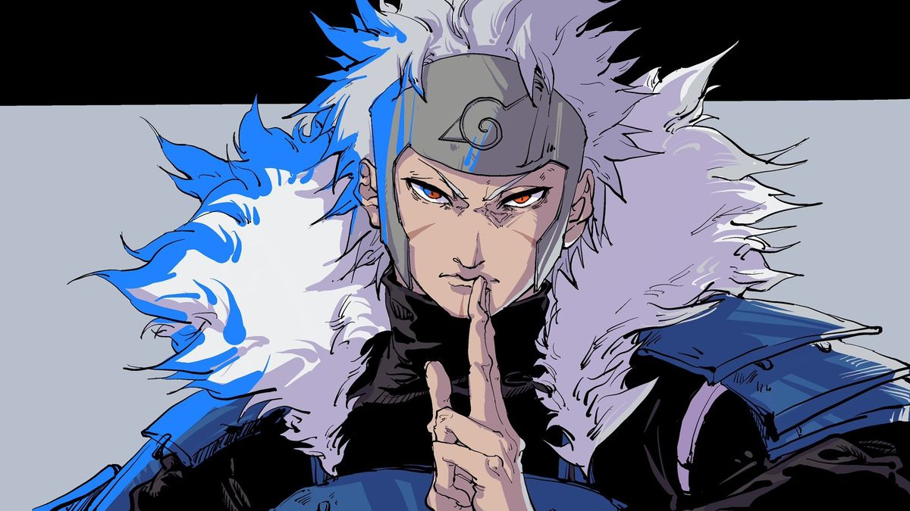
SecondA tactical genius who created the Academy, Anbu, and Chunin Exams. Invented the Flying Raijin, Shadow Clone, and Reanimation jutsu.
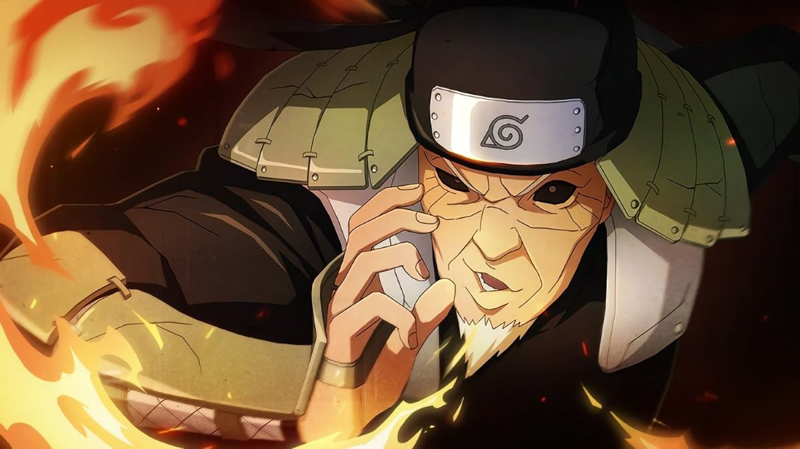
ThirdNicknamed "The Professor" for mastering all non-kekkei-genkai jutsu in Konoha. He nurtured the Will of Fire in generations of ninjas.
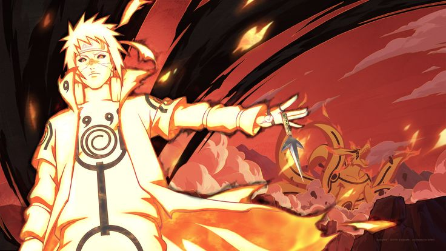
FourthKnown as the "Yellow Flash". He developed the Rasengan and sacrificed his life to seal the Nine-Tails, saving the leaf village.
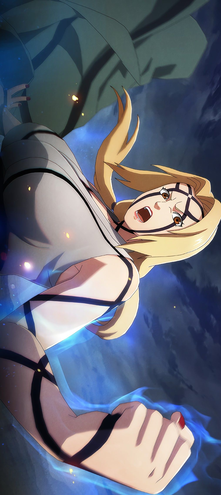
FifthGranddaughter of Hashirama. The world's greatest medical-nin, she brought hope and recovery back to the village after crisis.
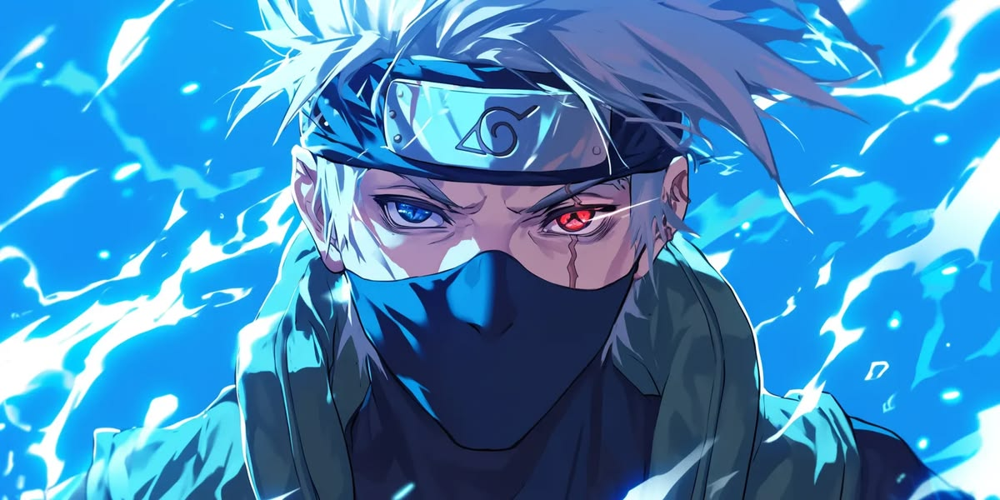
SixthThe famed "Copy Ninja" who copied over a thousand jutsu. Guided Team 7 and ruled in the reconstruction era after the war.
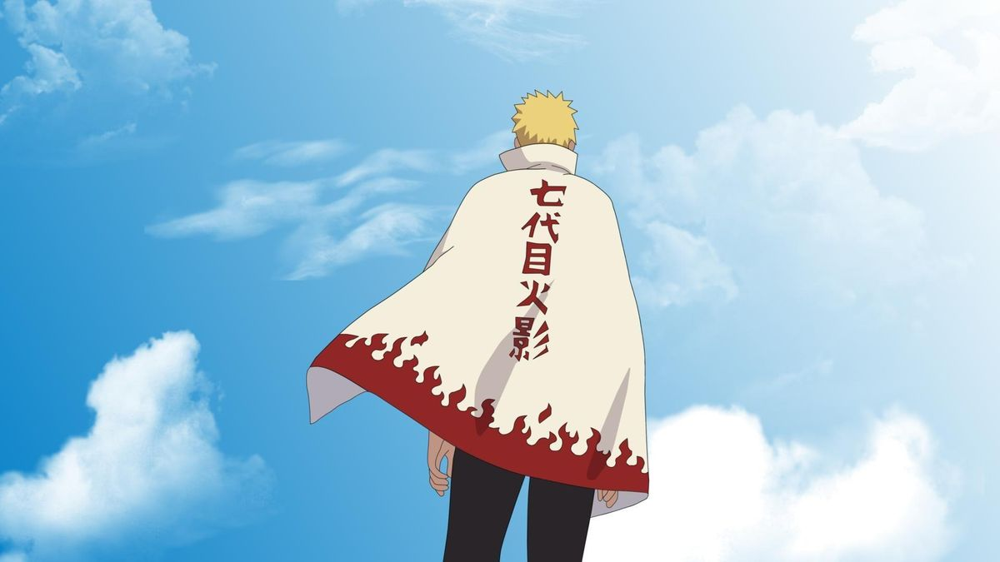
SeventhThe child of prophecy who united all Tailed Beasts, saved the Shinobi world, and achieved his lifelong dream of leading the Leaf.
No matter the odds, a true ninja pushes forward. Giving up is not an option; it's a decision to stand still while the dream slips away.
"Those who break the rules are scum, but those who abandon their friends are worse than scum." Bonds are the source of true strength.
Genius is nothing without effort. Hard work beats natural talent when talent fails to work hard, as shown by Rock Lee and Naruto.
To shield the innocent and guard the home that nurtured you, offering your life for the peace of future generations.
A declaration of absolute belief in one's path. Speak your dream into existence and let every action prove it true.
The spiritual belief that love, unity, and protection of the village are the keys to peace. It is passed down to every generation.
The journey of a true ninja never truly ends.